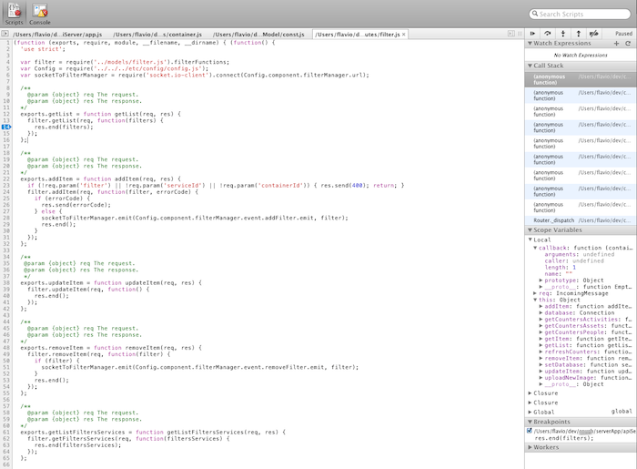
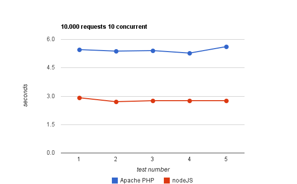
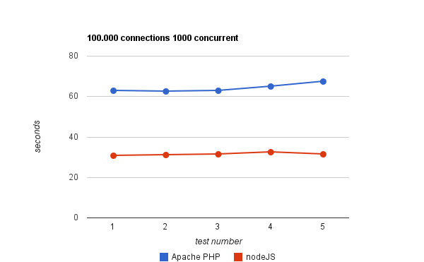
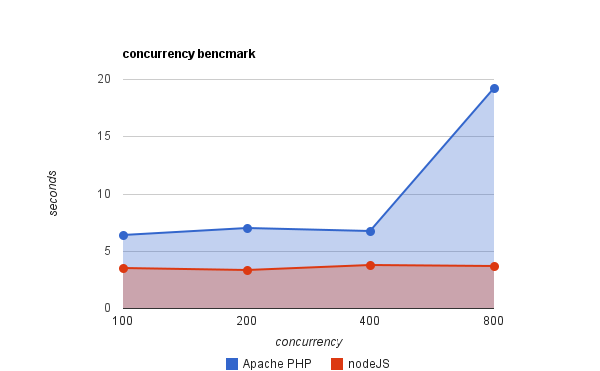

Overview

今天我们会覆盖这些东西:
- What is node.js ?
- Why node.js ?
- When can we use node.js ?
What is node.js ?
什么是 node.js ？
What is node.js
Node.js is a platform built on Chrome's JavaScript runtime for easily building
fast, scalable network applications. Node.js uses an event-driven, non-blocking
I/O model that makes it lightweight and efficient, perfect for data-intensive
real-time applications that run across distributed devices.
- 基于V8引擎
- 快速，可扩展的网络应用
- 事件驱动
- 非阻塞的I/O模型
- ~ Apache + php
What is node.js ?
一个简单的Demo
var http = require('http');
http.createServer(function (req, res) {
res.writeHead(200, {'Content-Type': 'text/plain'});
res.end('Hello World\n');
}).listen(1337, "127.0.0.1");
console.log('Server running at http://127.0.0.1:1337/');
Why node.js ?
为什么使用 node.js ？
Why node.js ?
Pros
- Yes, JavaScript!
- Event driven And non-blockong I/O
- Long connection
- npm
- Vibrant community
- Funny Debugger
Why node.js ?
Yes, JavaScript!
var replaceTmpl = function(str, conf) {
return("" + str).replace(/\$(\w+)\$/g, function(a, b) {
return typeof conf[b] != "undefined" ? conf[b] : "$" + b + "$"
});
};
var ret = replaceTmpl("pre_$str$_suffix", {str: "HELLO"});
console.log(ret);
- 无处不在的 JavaScript
- 前后端代码的复用！
Why node.js ?
Event driven And non-blockong I/O
process.on('uncaughtException', function(err) {
console.log('got an error: %s', err.message);
process.exit(1);
});
setTimeout(function() {
throw new Error('fail');
}, 100);
Why node.js ?
Event driven And non-blockong I/O
当同时有好几个请求的时候，Node会通知操作系统(通过 epoll, kqueue, /dev/poll, or select) 如果有新连接来了
吼一声，然后它就睡觉去了。。。只有当新连接来了，操作系统会把它拽醒，它才执行一下回调。于是每个请求对它来说，
就是小菜一碟。而不像其它大多数的 Web Server都会分配一个线程(2MB)去处理。
var http = require('http');
http.createServer(function (req, res) {
res.writeHead(200, {'Content-Type': 'text/plain'});
res.end('Hello World\n');
}).listen(1337, "127.0.0.1");
console.log('Server running at http://127.0.0.1:1337/');
Why node.js ?
Event driven And non-blockong I/O
- 单线程
- no lock at all...
- so never dead locking...
Why node.js ?
npm
- node package modules
- 简单至极的package 管理
- 简单至极的package 发布
- 306 501 downloads in the last day
- 8 506 657 downloads in the last week
- 31 897 375 downloads in the last month
Why node.js ?
Vibrant Community
- 好活跃啊
- 好活跃啊
- 好活跃啊
- 好活跃啊
Why node.js ?
Funny Debugger

And Then?
Why node.js ?
Compare with Apache+php
Why node.js ?
Compare with Apache+php
/usr/sbin/ab -n 10000 -c 10 http://localhost:8080/

Why node.js ?
Compare with Apache+php
/usr/sbin/ab -n 100000 -c 1000 http://localhost:8080/

Why node.js ?
Compare with Apache+php

Why node.js ?
Storage
Why node.js ?
Storage
支持各种常用的存储系统
- mysql
- memcache
- mongodb
- redis
Why node.js ?
MySQL
以最常用的 mysql 为例子，https://github.com/felixge/node-mysql
var mysql = require('mysql');
var connection = mysql.createConnection({
host : 'localhost',
user : 'me',
password : 'secret',
});
connection.connect();
connection.query('SELECT 1 + 1 AS solution', function(err, rows, fields) {
if (err) throw err;
console.log('The solution is: ', rows[0].solution);
});
connection.end();
Why node.js ?
Connection Pool
类似于 Java 的 Connection Pool，nodejs也有 Connection Pool
- mysql
- memcache
- mongodb
- redis
Why node.js ?
MySQL Pool
以最常用的 mysql 为例子
var mysql = require('mysql');
var pool = mysql.createPool({
host : 'example.org',
user : 'bob',
password : 'secret'
});
pool.getConnection(function(err, connection) {
// Use the connection
connection.query( 'SELECT something FROM sometable', function(err, rows) {
// And done with the connection.
connection.end();
// Don't use the connection here, it has been returned to the pool.
});
});
Node.js 真的这么好么？
When can we use node.js ?
node.js的应用场景
When can we use node.js ?
- Server push向客户端 / 长连接
- 较简单逻辑的Server，try it!
- 高并发平行代码
- Command-line Tools
When can we use node.js ?
socket.io
- Real Long Connection
- 兼容所有浏览器
- 100% javascript，前后端长一个样。。。
When can we use node.js ?
socket.io
var io = require('socket.io').listen(9090);
io.sockets.on('connection', function (socket) {
socket.emit('news', { hello: 'world' });
socket.on('my other event', function (data) {
console.log(data);
});
});
<script src="/socket.io/socket.io.js"></script>
<script>
var socket = io.connect('http://localhost');
socket.on('news', function (data) {
console.log(data);
socket.emit('my other event', { my: 'data' });
});
</script>
When can we use node.js ?
Grunt.js
- JavaScript Tast Runner
- 各种自动化，压缩，打包，单元测试，语法检查，部署，等等
<Thank You!>
Zhang Guangda